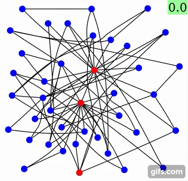
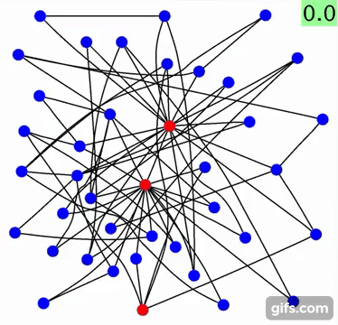

最も良い製品開発チームを編成する
...
テンポラルネットワーク上の合意制御
（作成中）

インフルエンザと学級閉鎖の数理
インフルエンザは毎年冬に流行します．学級閉鎖が頻繁に起こります．今年（2018年）の1月22日から28日の間だけでも，日本全体で約1万件の学年閉鎖・学級閉鎖がありました．
いろいろ不思議なことがあります．まず，学級閉鎖はいつすれば良いのでしょうか．例えば奈良県では10%～15%の欠席率が一つの目安となっています（2009年の情報）．それでは，10%や15%の数字の根拠は何でしょうか．この論文では，「実際に学級閉鎖をどの時期にどの程度の日数で実施すべきかについての知見はほとんどない」とされています．そもそも，学級閉鎖は「役に立つ」のでしょうか．この報告書では，「通常の学級閉鎖」には「地域への感染拡大を抑える効果はほとんどないと考えられている」ともあります．なぜかというと，通常の学級閉鎖は「消極的」だからだそうです．欠席が増えてから閉鎖するのでは遅すぎて，感染拡大が起こる前に前もって「積極的」に学級閉鎖をするのが有効だとされているようです．
我々の研究グループでは，学級閉鎖やそれを一般化した社会距離戦略の有効性を検証しています．特に，適応的に変化するネットワーク上の感染症のダイナミクスの理解およびその最適な制御手法の開発を目標としています[PRE16, CDC15].
 



大腸菌の行動を理解する
...
遠隔で上手くものを操る―ネットワーク化制御
...

切り替えシステムの数理
種々のクラスの線形切替システムの安定性判別を行っています．特に，Markov regenerative processという広いクラスの確率過程によって表現される線形切替システムの安定性が，ある行列の固有値により特徴づけられることを導きました．[Automatica, SCL, SICON]